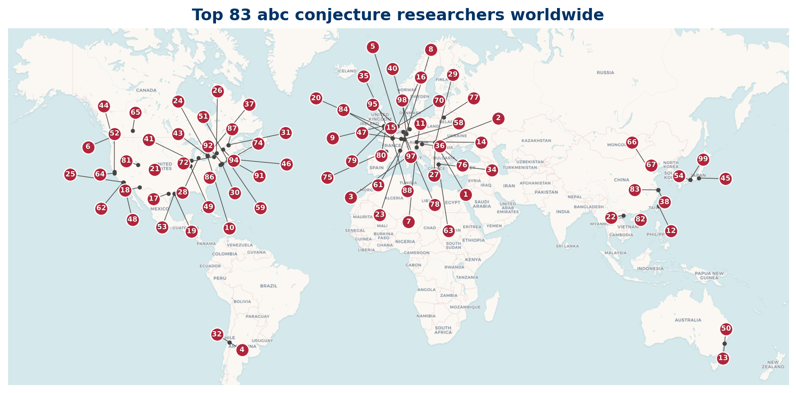

Who's Who in abc Conjecture Research
A directory of researchers working on the abc conjecture
The abc conjecture, formulated independently by David Masser and Joseph Oesterle in 1985, is a central open problem in number theory. For any three coprime positive integers a, b, c with a + b = c, it asserts that c is bounded above by a fixed power of the radical rad(abc) (the product of the distinct prime factors of abc). The conjecture is open. It implies a striking range of consequences in Diophantine equations, including an asymptotic form of Fermat's last theorem, bounds on Wieferich primes, and the Szpiro conjecture for elliptic curves. Shinichi Mochizuki announced a claimed proof via Inter-universal Teichmuller theory in 2012; as of 2025 the proof has not been accepted by the broader mathematical community.
This site is a reference directory of the researchers most active on the abc conjecture and the surrounding circle of problems: the Szpiro and Vojta conjectures, S-unit and Thue equations, height inequalities, Belyi maps, and arithmetic analogues of Nevanlinna theory. It catalogs the Top 100 researchers ranked from arXiv preprint output and OpenAlex citation data, and gives their institutions.
How the list is built
Three independent signals are combined into one composite ranking:
- arXiv preprint output, filtered to math.NT and math.CO categories, matched against 14 search terms.
- OpenAlex topical citations.
- zbMATH Open, using the MSC subject classes (11J25, 11D75, 11J87, 11G05).
The three pipeline ranks are combined with a weighted order statistic: for each researcher the three ranks are sorted and weighted 70% on the best, 20% on the middle, and 10% on the worst. Lower is better. See the methodology for details.
Top 100 at a glance
100 researchers, drawn from 10 countries.
| Country | Top 100 researchers |
|---|---|
| 54 | |
| US | 4 |
| HU | 2 |
| IT | 2 |
| DE | 1 |
| CA | 1 |
| AT | 1 |
| TW | 1 |

Where to start
- The Top 100 is the canonical ranked list, sortable in your browser.
- Regional listings: North America, Europe, Asia & Pacific.
- Reading list: short papers from 2018 onward, with clickable links.
- Data: the ranked list as an open CC-BY dataset, with a citable DOI.
- Methodology: how the data is built, audit decisions, and limitations.